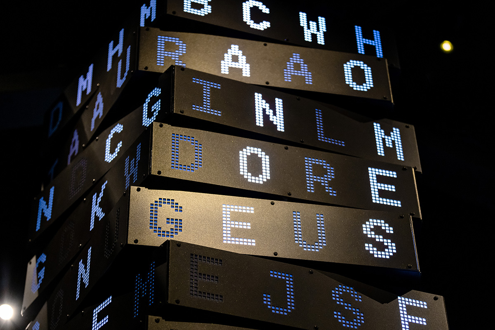

Decoded: Australian Signals Directorate
Canberra, Australia
Decoded marked 75 years of the Australian Signals Directorate and translated highly classified, technical subject matter into a public exhibition without diluting its complexity.
We developed the exhibition concept, narrative framework, and visitor flow. I shaped the interpretive strategy, visitor flow and story structure, defining how audiences moved from its origins in the Second World War to contemporary cyber security.

The design clarified complex systems and made invisible work legible through interactive and media elements, balancing secrecy with public understanding.


The exhibition addressed a broad audience, from general visitors and school groups to current and former ASD staff and their families, creating a space that was informative, reflective, and credible.

Decoded opened a rare public window into the work of the Australian Signals Directorate. It translated a largely invisible field into an experience visitors could explore, question and better understand.